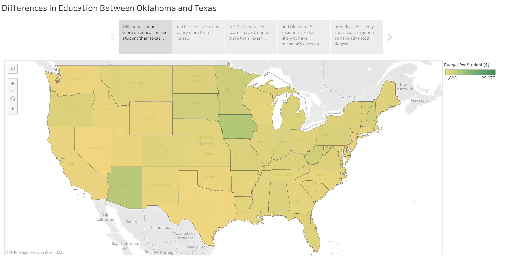

Income and Education

Income and Education

- Date Completed
- December 8th, 2018
- What It Is
- A dataset and article that aim to discuss issues of funding in Oklahoma. One major finding was that Oklahoma spends more per student that other states that outperform it academically. The article required hours of interviews
- Technologies Used
- Excel, VBA, and Tableau
- Plans for Future Improvement
-
- This topic interests me greatly, so I'd like to investigate further through the CAF project
- At the time of writing this, I'm learning R, so I may go back and play with the dataset again with that
- Links
- Tableau Graphs
- Google Doc